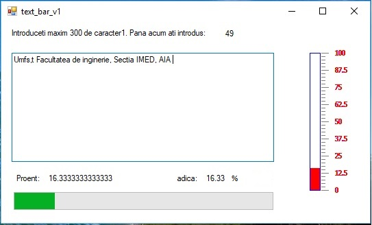

afisati lungimea unui sir de caractere, introdus de la tastatura folosind functia strlen .
afisati lungimea unui sir de caractere, introdus de la tastatura fara a folosi functia strlen .
creati functia my_strlen care imita functia strlen .
afisati numai minusculele dintr-un sir
transformati un sir introdus in majuscule
numarati vocalele si consoanele dintr-un sir
numarati aparitiile unei litere
stergeti un subsir dintr-un sir
ordonati alfabetic mai multe cuvinte
scrieti functia substr(sir,p1,p2);
validati un numar intreg introdus de la tastatura.
Siruri WFA
Se reia aplicatia "text_bar" din curs si se va fisa procentul de litere introduse pe un ProgressBar.
Folosind clasa termo se va afisa numarul de cuvinte introduse.
Se vor citi numarul de spatii pentru a afla numarul de cuvinte fara a tine cont de cazul in care apar mai multe spatii consecutive
Se vor citi numarul de spatii pentru a afla numarul de cuvinte, dar se tine cont de cazul in care apar mai multe spatii consecutive

Realizati o aplicatie in care cititi un sir format din 3 valori despartite prin "," . Extrageti cele 3 valori si folositi primele 2 valori
pentru a le afisa folosind de la clasa anemom iar ultima valoare afisati-o folosind clasa termo.